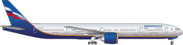
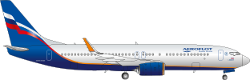

|  | |
| Aircraft type: | Long-haul passenger aircraft |
| Length (m): | 73,9 |
| Wing span (m): | 64,8 |
| Cabin configuration (passengers): | 30C+48W(Comfort)+324Y |
| Max. take-off weight (tons): | 317,5 |
| Type of engine: | 2 jet engines |
| Cruising speed (km/h): | 905 |
| Max. altitude (km): | 13,1 |
| Maximum flight range (km): | 11 200 |
| Aircraft names: |
|
|  | |
| Aircraft type: | Short-&medium-haul passenger aircraft |
| Length (m): | 39,5 |
| Wing span (m): | 35,8 |
| Cabin configuration (passengers): | 20C+138Y |
| Max. take-off weight (tons): | 79,0 |
| Type of engine: |
2 jet engines |
| Cruising speed (km/h): | 900 |
| Max. altitude (km): | 12,5 |
| Maximum flight range (km): | 4 500 |
| Aircraft names: |
|